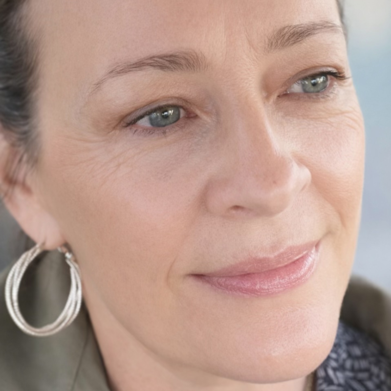

Qui suis-je
Marie-Laurence Bonneau
Sophrologue certifiée (ISSO Toulouse) — Aide-soignante en USC & SSPI
Sophrologue de formation, je me suis ensuite formée au métier d'aide-soignante — un choix cohérent avec mes valeurs d'accompagnement. Cette double approche, entre écoute et rigueur clinique, nourrit chaque séance que je propose.
Basée à Grézet-Cavagnan, j'accompagne le suivi individuel en visio, où que vous soyez. Je me déplace aussi pour des ateliers de groupe chez un particulier, en entreprise ou pour le compte de collectivités et associations, dans le Marmandais.
Lire la suite Réduire
J'exerce aujourd'hui en Unité de Soins Continus (USC) et en Salle de Surveillance Post-Interventionnelle (SSPI), où réactivité et maîtrise des soins en situation critique font partie du quotidien. J'interviens également en IFSI et IFAS, où je transmets la gestion du stress et la posture professionnelle aux futurs soignants.
Passionnée de bien-être et de musique, je crée aussi des audios de relaxation sur ma chaîne Sophromelody.